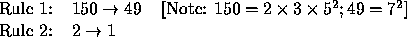
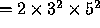
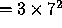
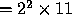
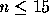

| Halting Factor Replacement Systems |
A Factor Replacement System (FRS) transforms an input integer to another integer by applying rules. Each rule specifies how a set of prime factors of the input integer are replaced by a second set of prime factors. Consider these rules:

Rule 1 specifies that if the integer has one factor of two, one factor of three, and two factors of five, then those factors are removed and replaced with two factors of seven. Using this rule, the integer 450 ( ) becomes 147 (  ), but the integer 44 (  ) is unaltered. Rule 2 specifies that a factor of two should be removed from the integer. Thus 147 is unaltered by this rule but 44 becomes 22 with one application of the rule.
The FRS rules are ordered. For a given input, the rules are examined in order to find a match. When a match is found, the rule is applied once and the process begins again with the first rule. An FRS halts when no rules can be applied. In the above example, the FRS terminates on input 450 with output value 147 and on input 44 with output 11.
Given the rules of an FRS and several positive integers, produce the result of applying the FRS to each integer. It is guaranteed that the FRS will halt for each input integer.
Each FRS description begins with a line containing a non-negative integer n (  ), the number of rules. The next n lines contain the rules. Each rule consists of two positive integers separated by at least one space; the first integer is the left part of the rule and the second integer is the right part of the rule, as described above. The next line contains a non-negative integer k, the number of input integers. Each of the next k lines contains a single integer to be input to the FRS.
Your program must stop processing input when it reaches an FRS in which n is zero.
For each data set, output a line indicating the data set number. For each input integer, output a single line containing the input integer and the final FRS value, as shown in the Sample Output. Leave a blank line after the output from different FRS's.
Note that although all numbers used in the input file for rules and FRS input values are 32 bit integers, the output value from an FRS may exceed the maximum value that can be represented by a 32 bit integer (or even a floating point number).
2 150 49 2 1 2 450 44 2 9 4 3 1 1 27 0
FRS #1:
450 becomes 147
44 becomes 11
FRS #2:
27 becomes 4